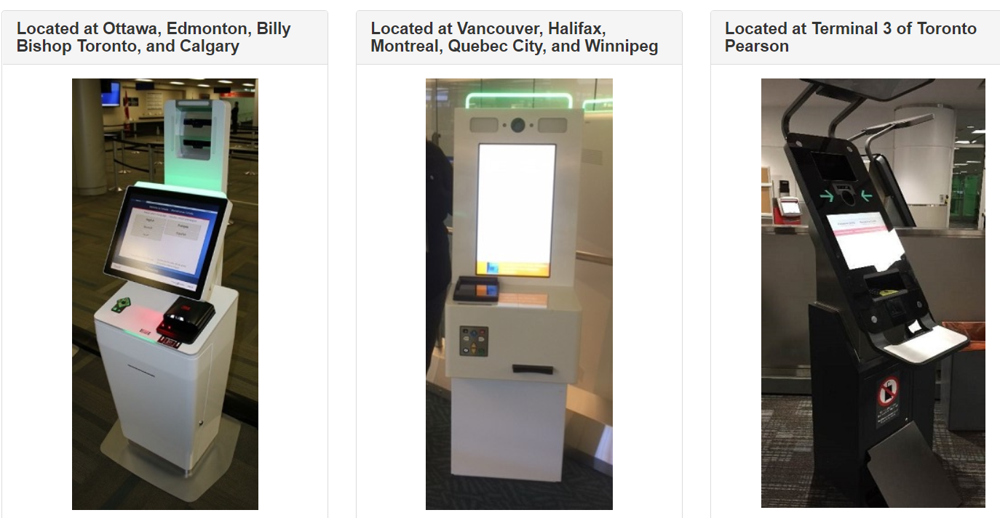

Abstract
For my second Co-op, I returned to Canada Border Services Agency in Ottawa. Returning to the CBSA was a pleasure and I got to work with many familiar faces. This time I worked as a Junior Software Developer instead of a Software Tester, which I extremely enjoyed. From this blog I hope to show you what experience I gained from this 4 month Co-op experience, and to show you if I achieved the goals I set before the Co-op began.
Information about the Employer
Similar to my previous employment for my 8-month Co-op in 2018, I worked for Canada Border Services Agency. It is truly excited working for such an important Government agency, and I felt like the work I was doing will have a impact in the future. More specifically I worked in the Traveller Systems Division which dealt with Travellers coming into Canada via the air, land, or sea.
My division works on most of the systems that process traveller entering Canada at the major ports of entry, such as Toronto Pearson Airport. When the traveller comes into Canada, they are greeted by our Kiosks. They will then answer various questions about why they are coming and what they are bringing into Canada and scanned their passport. Our systems do their work and after it is complete, we decide if the traveller can enter Canada or if they need to speak to a Border Security Officer to answer more questions. As you can probably guess, this is an extremely important job as we do not want to let potentially harmful people into our homeland. It was very exciting learning about the technology and getting to work on new technologies they are planning to implement.
CBSA Primary Inspection Kiosks
Job Description
For this Co-op, I got to move from testing into the world of Software Development as a “Jr. Software Developer.” This was very exciting for me as it was what I really wanted to do. I finally got to put my skills to the test and see if what I was learning in school actually paid off in a real-life development job. My job was very appealing to me because from the very first day I got there I was assigned a project and I got to start working right away. I wanted to be very busy at work and have as many opportunities as possible. The new team that I was a part of was more organized, but they had a lot of work on their plate.
The first project I worked on was an API for Border Wait Times that can be accessed through signing up for the API on the Government of Canada API Store. I had to create to backend for this API from scratch using Java. The project gave me tons of flexibility because I was the sole developer, so I could develop the code however I wanted. In order to deploy the API, I got hands on experience using Amazon Web Services to host the backend and create an API gateway. The government is planning on moving most of its services to the cloud, I was on the forefront for this pilot project. Together with another Co-op student from Algonquin College, we proved that AWS could be used to host our services.
My second project was improving an existing web site used as a management system for the Primary Inspection Kiosks at the airport. This was an interesting project because it gave me a chance to design fresh new looks for a website that was used regularly. I got to used Balsamic Mock-ups to design wire frames and experiment with different looks. After finishing my mock-ups and a few weeks of brainstorming features we began to have various meetings with our clients for the applications. I presented my mock-ups to the clients and we engaged in various discussions relating to the look and functionality of the product. It was an exciting to be involved in meeting with the clients and be involved in all the stages for the software development life cycle. After all the decision were made, I got to change to existing website to the new agreed upon site. I was main developer working on this product, so I wrote most of the new front and the back end. Still being relatively new to html and CSS, once again my development consisted of a lot research and figuring things out on my own.
The big takeaway from co-op them I learned is, instead of asking others for help, you need to learn how to conduct your own research to develop a solution. When you gain this skill, you can achieve almost anything. I want to continue to develop this skill and be able to learn new skills faster and faster.
Goals
- Gain confidence as a developer by working on large scale applications, learn to manage large volumes of code and working off previous code written by others. My work term with the Government of Canada helped me gain confidence as a developer in the software industry. Being given a pilot solo project to work on from my first day was a unique experience. I had to create an API, something of which I have never done before, and create various GET and POST requests. These requests had to collect data and return it in the form of JSON objects. I got to explore new technologies such as Java Springboot and Gradle. I found my first project very interesting because no one in my directorate had done a similar project before, so it was up to me to research and come up with my own solution. Upon completing the first version of the API, and receiving positive feedback from my manager, I proved to myself I had the skills and knowledge to work as a software developer.
- Participate in code-walk throughs and code reviews to improve coding techniques. After my first few weeks on the job I completed the API and had code review with my fellow teammates. The code review went very well, and they were impressed with the quality of code I wrote. I was very happy with the code review because they were picky and suggested areas of improvement in the style and efficiency of my code. Throughout my coop I learn valuable coding techniques. I had to practice looking at other developer’s code, with little comments, to find out what each algorithm did. I found naming variable was one of the most important things you could do, even without comments it describes what the program is intending to do. Writing clean code is a very importing thing in the world of development and I am going to continue striving to improve the quality of my code.
- Learn to code in a team environment and work with others to solve problems and complete all assigned
projects.
Working at the CBSA was challenging and I had a ton of questions. I quickly learned how I could rely on them and ask them questions when I was first starting out. The projects we took on required a lot of design and creating strategies to tackle complex problems. Working in teams made solving the problems facing me much easier. Sometimes having a fresh set of eyes to look at the problem proved extremely useful. I found it interesting transitioning from school, were one could not share code with others, to the work environment where we were able to freely share code with others. It was different showing others my code, and I found myself writing cleaner, well commented code knowing others will be seeing and depending on my code. I enjoyed the team atmosphere of my job and the new things it brought to the development experience. I will be excited for the next chance we get to be in the team atmosphere.
Acknowledgements
I would like to acknowledge my team lead Sonia for whom I worked my first Co-op with in Production Assurance, she moved into this new team and got me into it as well, I had a pleasure working with all of my teammates in the Traveller Systems Division and they taught me so much. Finally, I want to thank my manager Mathieu who assisted me so much and offered me another co-op for my 8-month term in 2020. I am excited to return to work in January and see what the next assignment has in store for me.